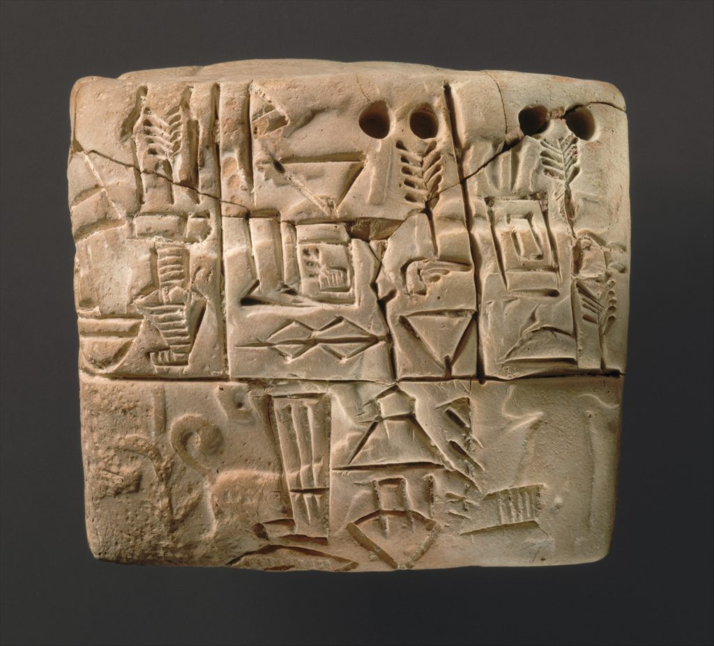

HISTORIA DE LA ENCUADERNACIÓN
Las primeras coberturas para proteger escritos datan del año 4,000 a.C. en la antigua Mesopotamia, aquí se escribía sobre tablillas de barro y para protegerlas se fabricaban envoltorios del mismo material, se puede decir en forma de sobre; en estas tablillas se ponían inscripciones o dibujos que las adornaban.
Durante la civilización egipcia, se inventó un nuevo sistema para la escritura, el papiro, este se obtenía de una planta con forma de caña de dos a tres metros de altura que nacía a orillas de río Nilo. Al tratarse de un material orgánico necesitaban otra clase de objetos para proteger los documentos; así se encuentran varios tipos de encuadernaciones hechas con caja de madera, piel o marfil.
En la época de los griegos y romanos se usaban recipientes hechos con arcilla para proteger sus pergaminos, algo económico pero incómodo para transportar los documentos.
Tablilla sumeria, Uruk III, 3100-2900 a.C.. The Metropolitan Museum of Art
EGIPTO
Durante la civilización egipcia, se inventó un nuevo sistema para la escritura, el papiro, este se obtenía de una planta con forma de caña de dos a tres metros de altura que nacía a orillas de río Nilo. Al tratarse de un material orgánico necesitaban otra clase de objetos para proteger los documentos; así se encuentran varios tipos de encuadernaciones hechas con caja de madera, piel o marfil.
En la época de los griegos y romanos se usaban recipientes hechos con arcilla para proteger sus pergaminos, algo económico pero incómodo para transportar los documentos.
Papiro con inscripciones
De los codices a la encuadernación...
Después aparece el libro en forma de códice, en la caída del imperio romano. Un códice es un libro manuscrito anterior a la invención de la imprenta. Este formato hizo que se ideara otro tipo de protección, consistente en dos tablillas de madera de cedro usada por su aroma y ligereza, forrado con tiras de cuero de distintos colores y decoraciones.
En Europa, los códices más antiguos datan del siglo VII, son encuadernaciones muy hermosas hechas con metales preciosos, en esta época los libros se llegan a llamar libros-joya; eran libros encuadernados con incrustaciones de hueso, marfil, piedras preciosas y semipreciosas. Llegando a la Edad Media en los siglos V al XV se encuentran documentos que ya contaban con una portada diferente y sus hojas se encuentran unidas por un lomo; por otro lado, se menciona la innovación de la invención del papel chino.
La invención de la imprenta provocó que el número de textos fuera mayor, en esta época dejaron de ser los libros tan ostentosos y se vuelven más cómodos y menos pesados, la madera se cambia por un papel más grueso cubierto de tela o papeles decorados, así como pegamentos, hilos y cordones.
Un objeto tan bello y útil como un libro, no puede desaparecer por completo de la faz de la tierra, un libro es uno de los más asombrosos instrumentos que la humanidad ha inventado. El libro nos ha permitido difundir la cultura, en su forma actual, de papel y tinta, ha sido el mejor compañero a lo largo de los últimos 500 años.
Ahora nos podemos dar cuenta que la encuadernación artesanal es infinita, cada vez que se elabora un libro artesanal el resultado es distinto, aunque sigamos los pasos de uno, ninguno es igual a otro, es muy diverso y eso lo hace original, finalmente es un objeto artístico.